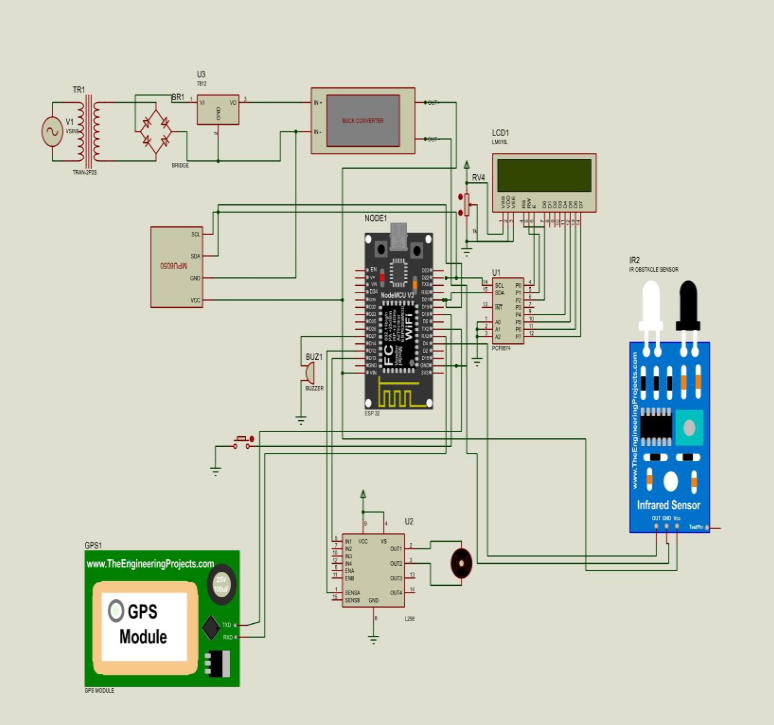

Microcontroller Based Drowsiness Detection Safety System

This project presents a real-time driver drowsiness detection system utilizing the ESP32 microcontroller. The system continuously monitors the driver's eye-blinking pattern using an IR-based eye blink sensor and detects head nodding movements using an MPU6050 accelerometer.
When drowsiness is detected, the system activates multiple safety mechanisms, including reducing vehicle speed using PWM control through an L298 motor driver and sending alerts to a remote monitoring system via the Blynk IoT platform. The integration of a GPS module enables real-time location tracking for enhanced safety and monitoring.
A 16x2 LCD with an I2C interface is used to display real-time system status, while the entire system is powered by a 12V supply regulated to 5V using an LM2596 buck converter, ensuring stable and efficient operation of all embedded components.
You can view the complete project documentation below:
View Full PDF / Documentation